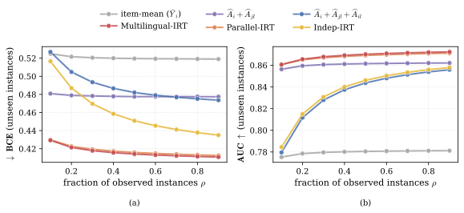
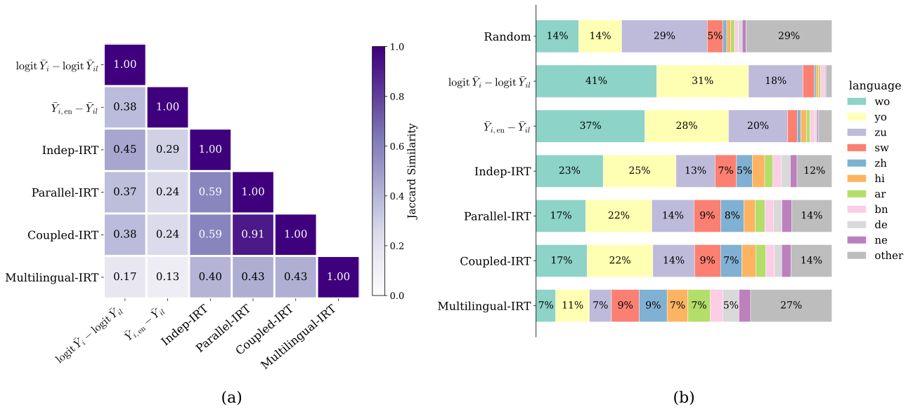
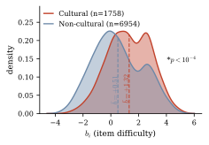
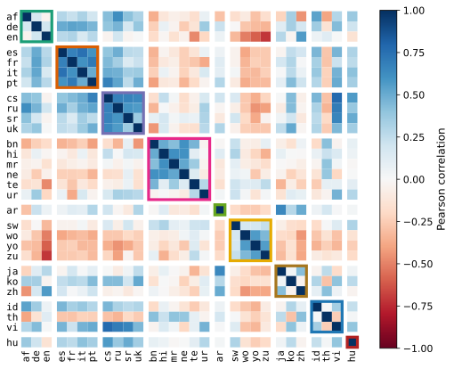

Parallel multilingual benchmarks test the same items across many languages, yet today they are scored as if every (item, language) pair were unrelated. Multilingual-IRT models that parallel structure directly, and its fitted parameters turn three chronic benchmark problems into three practical tools.
Fit on a fraction of the predictions tensor and impute the rest, with no need to run every LLM on every item in every language.
Per-language difficulty shifts flag items that became unexpectedly harder (or easier) in a given language.
Splitting discriminability into content vs. language components exposes items whose answers depend on cultural context.
Multilingual benchmarks are central to evaluating large language models (LLMs) across languages, but they suffer from three issues: exhaustive evaluation scales linearly with the number of languages, automatic translation introduces errors that are easily missed at scale, and some items conflate general and culture-specific knowledge. We address all three with a unified statistical framework, Multilingual-IRT, which extends Item Response Theory with per-language difficulty deviations, split discriminability separating content from language effects, and per-language ability residuals.
Fitting Multilingual-IRT on 25 LLMs across 29 languages of MMLU-Pro-X, we show that its fitted parameters support three practical applications: predicting unobserved (item, LLM, language) instances with 11–16% lower binary cross-entropy than the strongest accuracy-based baseline, surfacing candidate translation errors distributed across all 28 non-English languages (whereas accuracy-based baselines concentrate detections in a few languages), and recovering culture-specific items that accuracy-based baselines miss.
Multilingual-IRT extends the classic 2PL response model with three components, each capturing a structural fact about parallel multilingual benchmarks:
Per-language difficulty deviation. Translation can make the same item harder in one language than another. A large positive dil is a red flag for a translation error.
Correlated ability residuals. An LLM's proficiency deviates from its overall ability per language, with deviations coupled across languages through a learned correlation matrix.
Split discriminability. How much an item separates LLMs by content, versus by language. A high ratio alang/abase signals culture-specific knowledge.
HowEvaluating 25 LLMs on 11,759 items in 29 languages means filling an ~8.5M-entry predictions tensor. Multilingual-IRT fits on a sampled fraction ρ and predicts the rest, and fitting it costs negligibly compared to LLM inference.
FindingAt every observation fraction, Multilingual-IRT beats all accuracy-based baselines, and reaches near-full accuracy with only 40% of instances observed.

HowRanking instances by the standardized difficulty shift s(i,l) = dil/SE(dil) surfaces candidate translation errors for targeted review. An LLM-judge audit (validated by human annotators) confirms the flagged items.
FindingAccuracy baselines concentrate ≥70% of detections in three African languages; Multilingual-IRT spreads detections across all 28 non-English languages, and its negative tail even catches untranslated English left in questions.

HowRanking items by the ratio alangi/abasei surfaces those whose separation between LLMs is driven by language rather than content.
FindingThe top-ranked items probe culture-specific knowledge (U.S. federal subpoenas, Sikh Ragas, Yiddish vocabulary), barely overlap with what accuracy-based rankers find (Jaccard ≤ 0.11), and are systematically harder than universal ones.

FindingThe learned correlation matrix recovers Romance, Slavic, South Asian, and African family blocks with no typological supervision, and shows English clustering with high-resource Arabic, Japanese, and Chinese rather than with its Germanic relatives.

@article{lior2026multilingualirt,
title = {Extending Item Response Theory for Efficient and
Meaningful Multilingual Evaluation},
author = {Lior, Gili and Frostig, Tzviel and Stanovsky, Gabriel
and Eyal, Matan},
journal = {arXiv preprint},
year = {2026}
}